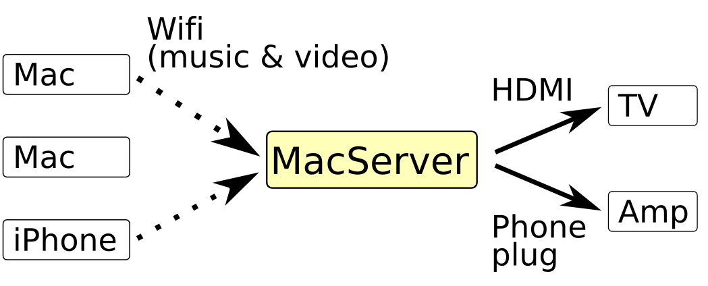
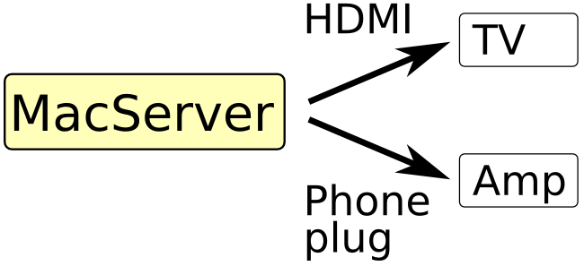
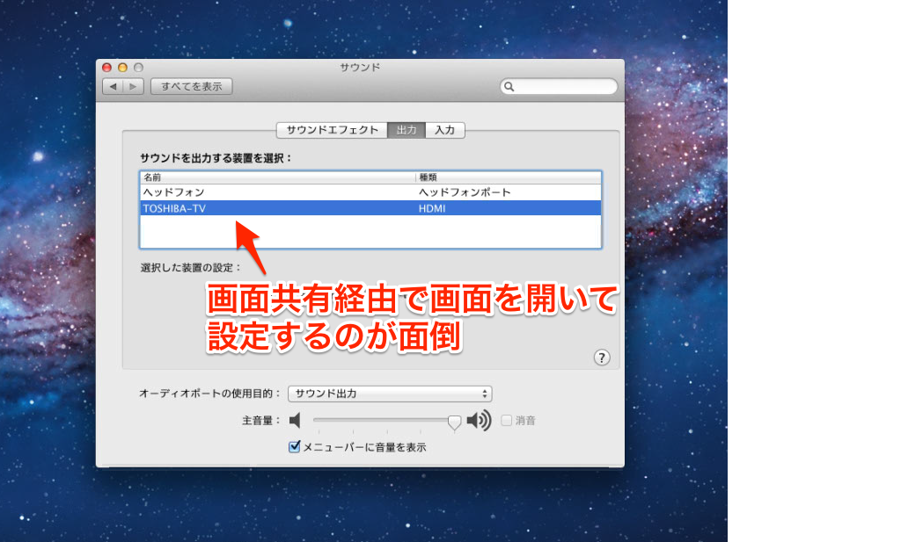
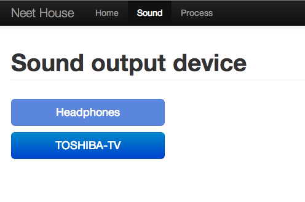
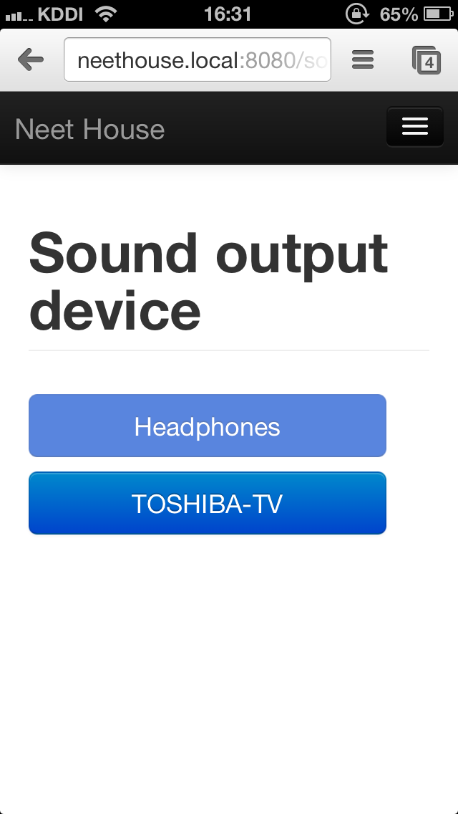
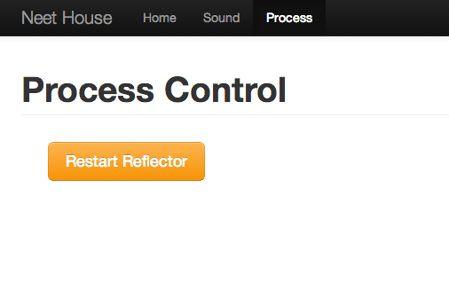

話すこと
- 我が家の構成 & 問題点
- Scalatraで作ったもの
- Scalaで外部プロセスを実行する方法
我が家の構成員
MacServerから出力(MacServer -> TV, Amp
- MacServerとTVはHDMIで接続(映像 & 音声)
- MacServerとAmpはPhone plugで接続(音声のみ)
音声出力が2系統
- 動画を流す時はHDMIで
- 音楽を流す時はPhone plugを使いたい
問題点
毎回Settingから変更するのは面倒
しかも画面共有(vnc)で接続しなくてはいけない…
そこで！
ブラウザから設定できるようにしました.
Scalatra + ちょっとしたコマンドラインツールで構成
ブラウザからだからiPhoneでも制御できるよ！！
PCで見た画面
Scalatraで作ったヽ(•̀ω•́ )ゝ✧
iPhoneで見た画面
コマンドラインツールの紹介
soundoutput
Macの音声出力デバイスを制御するコマンド- カレントデバイス表示
- デバイス一覧の表示
- デバイスの設定
ScalatraのServerでこのコマンドを実行している
近日公開！？(↓helpも完備)
NeetHouse:bin neethouse$ ./soundoutput -h
usage: soundoutput
Show current output sound device
or: soundoutput <device-name|device-number>
Set output sound device
or: soundoutput [-l|--list] [-h|--help]
Generic Options
-l, --list List all output devices
-h, --help Show this help
ちょっとDemo
ここからScalaのお話
Scalaからコマンドを実行する方法
REPLで試せます
// プロセス実行に必要なパッケージをimport
import scala.sys.process._
// 実行して結果を標準出力
// 文字列がProcessオブジェクトに暗黙の型変換される. Process("ls").! と同等
// 戻り値はコマンドの終了ステータス
"ls".!
// 実行して結果を取得
// \n区切りの文字列で結果が取得できる
val result = "ls".!!
// 実行して結果をStreamで取得
val result = Process("ls").lines
/*
val result = "ls".lines
とやるとPredefにある暗黙の型変換と被ってエラーが出る.
StringOpsの中にlinesメソッドがあるため.
*/
パイプも出来る
// ls | grep confを実行
// #|は暗黙の型変換で衝突しないので文字列のまま使える
"ls" #| "grep conf" lines
他の機能
Reflectorが不安定だから再起動出来るようにしといた

あとArduinoと赤外線LEDを使って
- テレビ
- アンプ
- エアコン
の操作もブラウザから出来るようにしたい.
arduinodeというnode.jsからArduinoを制御できるライブラリを使いたい.